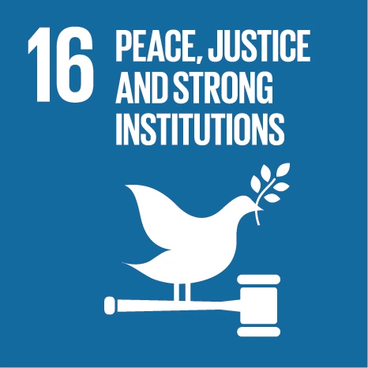

Goal 16: Promote just, peaceful and inclusive societies
Goal 16 of the Sustainable Development Goals is dedicated to the promotion of peaceful and inclusive
societies for sustainable development, the provision of access to justice for all, and building effective,
accountable institutions at all levels.

Goal Targets
1) Significantly reduce all forms of violence and related death rates everywhere.
2) End abuse, exploitation, trafficking and all forms of violence against and torture of children.
3) Promote the rule of law at the national and international levels and ensure equal access to justice for all.
4) By 2030, significantly reduce illicit financial and arms flows, strengthen the recovery and return of stolen
assets and combat all forms of organized crime.
5) Substantially reduce corruption and bribery in all their forms.
6) Develop effective, accountable and transparent institutions at all levels.
7) Ensure responsive, inclusive, participatory and representative decision-making at all levels.
8) Broaden and strengthen the participation of developing countries in the institutions of global governance.
9) By 2030, provide legal identity for all, including birth registration.
10) Ensure public access to information and protect fundamental freedoms, in accordance with national legislation
and international agreements.
11) Strengthen relevant national institutions, including through international cooperation, for building capacity at
all levels, in particular in developing countries, to prevent violence and combat terrorism and crime.
12) Promote and enforce non-discriminatory laws and policies for sustainable development.